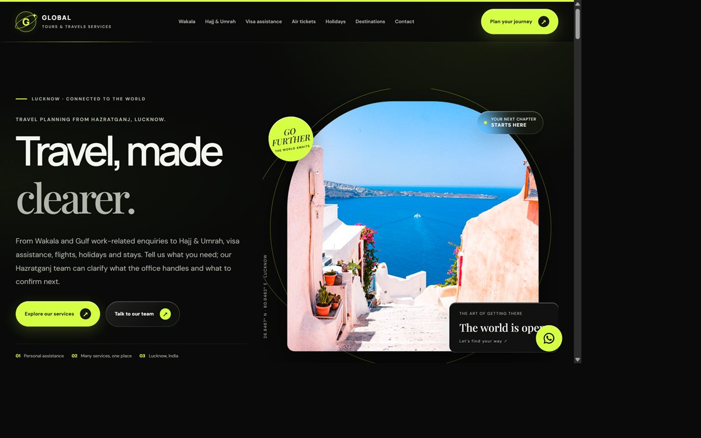

Commerce
Storefronts, catalogues and checkout, plus the operations behind them. Built to be run by a small team, not a platform fee.
Born in India · living globally · Cairo for now
Ten years of shipping the things people meet first: storefronts, apps, and now AI that talks back. I build and run Talkingo, Mangodish and Lunitaa — and take on a few outside projects each year.

Ten years of it, mostly on the commercial web: storefronts, catalogues, checkouts — the unglamorous plumbing that has to work on a bad phone, on a bad signal, at the end of a long day. Then apps. Then models that answer back.
Every product I have worked on eventually reduced to one sentence that had to land — a prompt, a support reply, a menu, a line of scripture read out of rhythm. Language is not the wrapper around the work. It is the work.
What we call communication is mostly the repair of miscommunication, and the repair is the craft: choosing the register, holding the ambiguity open long enough to see what is actually being asked, then saying the smaller, truer thing.
Models do not understand. They approximate understanding well enough to be useful, and the seam shows exactly where the approximation stops. My work is to know where that seam is — the workflow, the prompt, the review step, the person in the loop — so the seam never lands on a stranger who is trying to be understood.
A model that speaks fluently and means nothing is worse than silence.
Irsha Global exists because good ideas die of bad execution more often than of bad ideas. The studio keeps the same discipline as the language work: read closely, build small — irsha.me — and ship the honest version.
I was born in India and have never quite stayed put. The work travels; the desk moves; the name on the invoice is American.
Introvert by default, dangerously social by choice. The best moment in this work is the one where a stranger becomes a collaborator — and the quiet that follows when a hard problem finally gives.
Three ventures and the studio that holds them — language, hospitality and commerce, built by the same small team.
For the learner who knows every rule and still freezes when someone says hello.
Talkingo is conversation practice for people learning a language: an AI partner that listens, answers, and corrects without breaking the flow. I run production — the prompt architecture, the review loop, and the line between what a model can say and what a learner should hear.
Learner“I always wanted learn how to cook.”
Talkingo“I’ve always wanted to learn how to cook.”
Irsha is the container for the work: Talkingo, Mangodish and Lunitaa, built and held by the same small team. The method is deliberately unfashionable — research first, few decisions, and no ornament that cannot be defended in one sentence.
For the owner still writing orders on paper at eleven at night.
QR menus, ordering, payments and a kitchen display that updates while the room is full. Mangodish is restaurant software designed for the dinner rush rather than the demo — every state has to survive a Saturday at eight.
For the small brand that cannot afford to look generic.
Statement sneakers and small accessories, sold direct. Lunitaa is the commerce side of the practice: catalogue, checkout, and the copy that has to carry a product page when the photograph has three seconds to do its work.
For the family business in Lucknow whose counter is now a website.
Twelve pages, one voice: Wakala, Hajj and Umrah, visa assistance, flights, holidays and stays. Built end to end — copy, structure, layout and the enquiry path that turns a browse into a phone call.

Four disciplines, one habit: make the thing work before making it beautiful.
Storefronts, catalogues and checkout, plus the operations behind them. Built to be run by a small team, not a platform fee.
React, Node, APIs and dashboards. The unglamorous middle where a product either works or quietly does not.
Prompt architecture, evaluation and human-in-the-loop review. Models that are useful at the edges and honest at the seams.
Hindi, English and Arabic — modern standard and Egyptian. Localisation that carries register, not only meaning.
Speaking is the easy half. The other half is hearing what someone means before they finish the sentence — which is the only part that transfers to software.
Figures are rough. Language is always bigger than its census. The list is still open — Turkish next, Mandarin after that.
And what I say no to
Ten years in, the interesting part is still the same: getting a sentence to land.
I started with a landing page and a checkout button, because someone needed to sell something by Friday. Then client sites, then apps, then the awkward middle where both are needed — and eventually ventures of my own, which turned out to be the same job with higher stakes.
Somewhere in the middle I began an M.A. in Arabic rhetoric: still unfinished, still useful. Rhetoric is where I learned to notice the difference between what a text says and what it is doing. That habit turned out to be the whole job — a product page, a prompt, a menu and a support reply are all arguments, and all of them fail quietly when they are badly made.
Ten years on, the tools changed — most of them answer back now — and the question has not: does this make someone’s day measurably easier? If it does not, it is decoration.
Born in India · Cairo for now · Hindi · Urdu · English · Arabic · Spanish · French · a little Persian
08 / If this is the work
09 / The next conversation
If you have read this far, you already know whether it is worth twenty minutes.
No deck, no pitch. Twenty minutes on the thing you are stuck on — a storefront that will not convert, an app that needs a second brain, a model that keeps missing the point.
Thank you — that is enough to begin. I will reply within two working days, usually with a question rather than a calendar link.
Cairo · October 2026